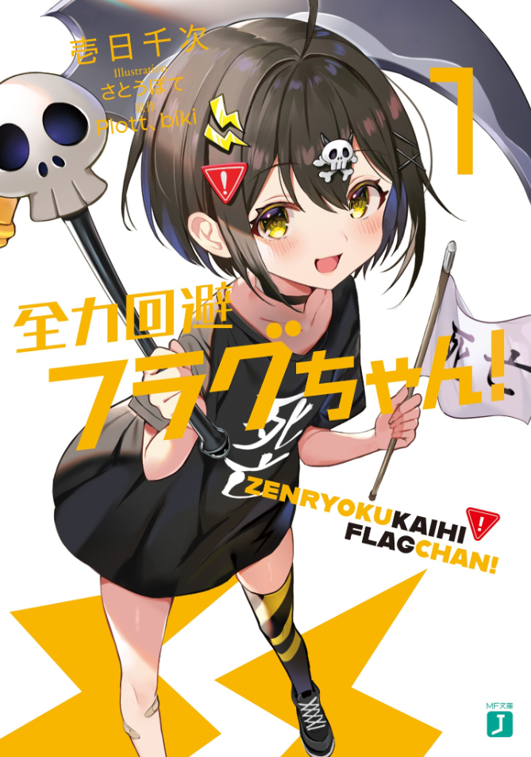

Zenryoku Kaihi Flag-chan!
Novel Info's
Status: Ongoing
Genre: Adventure, Comedy, Fantasy, Romance, Supernatural
Author: Ichinichi Senji
Illustrator: Satoupote
Volumes: 5
Original Publisher: Kadokawa & MF Bunko J
English Publisher: N/A
Fan Translation: CClaw Translation
Description/Sypnosis
“And there is the flag!”
So says Flag-chan, a Shinigami that suddenly appears in front of the average Joe, Mobuo. It’s her job to collect the lives of those who have set up a so-called Death Flag, an action or statement that has sealed their lives and brought them onto the path of death. However, little Flag-chan isn’t all too great at her job, so she accidentally helps Mobuo get rid of his Death Flag?! And not only that but even the Angel Life Flag-san and Love Flag get involved in the chaos?! Will Mobuo be able to survive this predicament that aims to set his passing in stone?
Download Links
Epub & Pdf